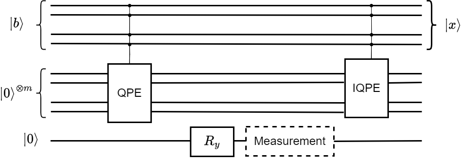
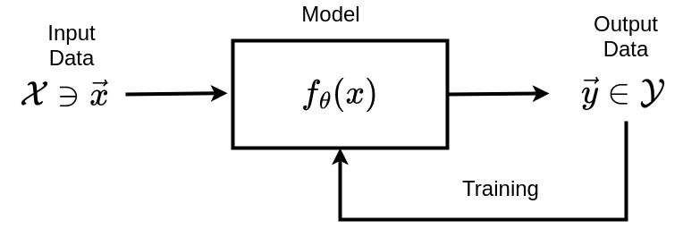
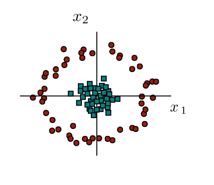
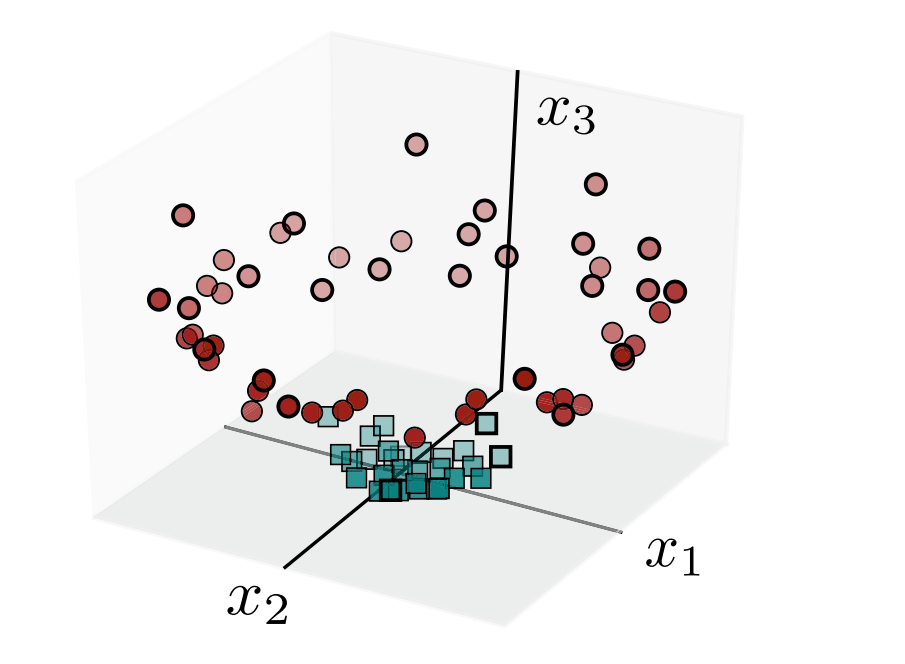
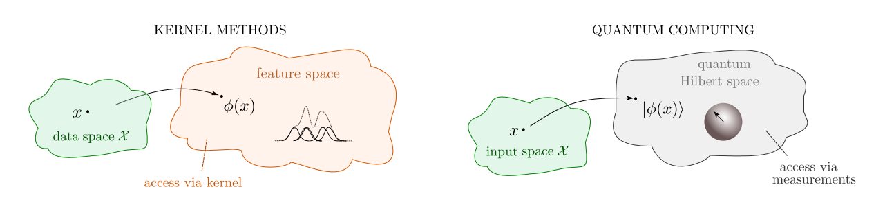

## Quantum Computing Algorithms
### and
## Applications
Pranay Raja Krishnan
22MMT002
The LNM Institute of Information & Technology
Jaipur
### Fundamentals of Quantum Computing
* The **qubit** forms the foundational unit of computing
* A qubit can be represented as a mathematical model with the following principles:
* Principle of Superposition
* Principle of Transformation
* Principle of Measurement
* Principle of Entanglement
### Fundamentals of Quantum Computing
##### Principle of Superposition
> The state of every qubit can be represented by a unit vector in a 2-dimensional complex Hilbert space
The state is normally described with respect to the **computational basis** $\\{ \\; \ket{0}, \ket{1} \\; \\} $
where
$\ket{0} = 1 + 0 i = \begin{bmatrix} 1 \\\\ 0 \end{bmatrix}$ and $\ket{1} = 0 + 1 i = \begin{bmatrix} 0 \\\\ 1 \end{bmatrix}$
### Fundamentals of Quantum Computing
##### Principle of Transformation
> Any change in the state of a qubit can be described by the action of a unitary transformation
A unitary transformation is a linear isomorphism that preserves the inner product.
This can be represented by a unitary matrix $U$ where $$U U^\dagger = U^\dagger U = I$$
### Fundamentals of Quantum Computing
##### Principle of Entanglement
> Multiple qubits interacting together results in the state space of the combined system being the *tensor product space* of the individual qubit state spaces
The tensor product $\ket{\psi} \otimes \ket{\phi} = \begin{bmatrix} a \\\\ b \end{bmatrix} \begin{bmatrix} c \\\\ d \end{bmatrix} = \begin{bmatrix} ac \\\\ ad \\\\ bc \\\\ bd \end{bmatrix}$
### Fundamentals of Quantum Computing
##### Principle of Entanglement
> Two interacting qubits have a state space of dimension 4
The state space for two interacting qubits has the **computational basis** $\\{\\; \ket{0}, \ket{1}, \ket{2}, \ket{3} \\; \\}$ where
$\ket{0} = \ket{0} \otimes \ket{0} \qquad \ket{1} = \ket{0} \otimes \ket{1}$
$\ket{2} = \ket{1} \otimes \ket{0} \qquad \ket{3} = \ket{1} \otimes \ket{1}$
### Fundamentals of Quantum Computing
##### Principle of Entanglement
> $n$ interacting qubits have a state space of dimension $2^n$
The state space for two interacting qubits has the **computational basis** $\\{\\; \ket{0}, \ket{1}, \ket{2}, ..., \ket{2^n - 1} \\; \\}$ where
$\ket{0} = \underbrace{\ket{0} \otimes \ket{0} \otimes ... \otimes \ket{0}}_{n \text{ times}}$
$\ket{2^n - 1} = \underbrace{\ket{1} \otimes \ket{1} \otimes ... \otimes \ket{1}}_{n \text{ times}}$
### Fundamentals of Quantum Computing
##### Principle of Entanglement
> Most states in the tensor product space cannot be expressed as the tensor product of states in the individual qubits
For example:
The state $\ket{\phi^+} = \frac{1}{\sqrt{2}} ( \ket{0} + \ket{1} )$ cannot be expressed as a tensor product of two individual qubit states
### Fundamentals of Quantum Computing
##### Principle of Measurement
Consider the qubit in state $\ket{\psi} = a \ket{0} + b \ket{1}$ and a measurement device calibrated to the computational basis
> The action of measurement causes the state of the qubit to collapse into either $\ket{0}$ or $\ket{1}$ which will be output of measurement
The probability of measuring $\ket{0}$ is $|a|^2$ and the probability of measuring $\ket{1}$ is $|b|^2$
### Contents
* Quantum Computing Algorithms
* Deutsch Algorithm
* Simon's Algorithm
* Grover's Algorithm
* Quantum Fourier Transform
* Quantum Phase Estimation
* HHL Algorithm
* Applications to Machine Learning
# Quantum Computing Algorithms
### Deutsch-Jozsa Algorithm
A function $f: \mathbb{Z}_n \to \\{ 0, 1 \\}$ is said to be **constant** when $f(x) = f(y)$ for all $x$ and $y$ in $\mathbb{Z}_n$.
A function $f: \mathbb{Z}_n \to \\{ 0, 1 \\}$ is said to be **balanced** if an equal number of input values to the function return $0$ and $1$.
> Given a funtion $f: \mathbb{Z}_n \to \\{0,1\\}$, determine whether the function is constant or balanced.
* Classical algorithms can solve this problem in $O(n)$
* Deutsch-Jozsa algorithm can solve this problem in $O(1)$
Note:
proposed by David Deutsch and Richard Jozsa in 1992
Although of little practical use, it is one of the first examples of a quantum algorithm that is exponentially faster than any possible deterministic classical algorithm.
### Simon's Algorithm
Let $\oplus$ represent addition modulo 2
> Given a 2 to 1 function $f$ satisfying the property that there exists a fixed $a \in \\{ 0, 1 \\}^n$ such that $f(x) = f(x \oplus a)$ for all $x \in \\{ 0,1 \\}^n$.
> Find the fixed string $a$.
* Classical randomized algorithms are known to have a worst-case time complexity of $O(2^{n/2})$
* Simon's algorithm solves the problem statement with a time complexity of $O(n)$
Note:
served as the inspiration for Shor's algorithm
1994
### Grover's Algorithm
> Consider a set $X$ with $N$ elements and let $f: X \to \\{ 0,1 \\}$ be a boolean function such that $f(x) = 1$ for exactly one element $x_0 \in X$.
> Find the element $x_0$.
* Classical algorithms have a time complexity of $O(N)$
* Grover's algorithm solves this problem with a time complexity of $O(\sqrt{N})$
### Grover's Algorithm
> Consider a set $X$ with $N$ elements and let $f: X \to \\{ 0,1 \\}$ be a boolean function such that $f(x) = 1$ for exactly one element $x_0 \in X$.
> Find the element $x_0$.
* First presented by Lov Kumar Grover as a database search algorithm
* The problem statement represents an unstructured search problem
* Grover's algorithm is proven to be optimal
Note:
1996
### Quantum Fourier Transform
Let $\omega = \exp\left( \frac{ 2\pi i}{N} \right)$
> The **Discrete Fourier Transform (DFT)** is a function $F\_N: \mathbb{C}^N \to \mathbb{C}^N$ that transforms a vector of complex numbers $\\begin{bmatrix} x\_0 & x\_1 & ... & x\_{N-1} \\end{bmatrix}^T$ into another vector of complex numbers $\begin{bmatrix} y\_0 & y\_1 & ... & y\_{N-1} \end{bmatrix}^T$ such that $$y\_k = \frac{1}{\sqrt{N}} \sum_{j=0}^{N-1} x\_j \exp\left(-\frac{2 \pi i }{N} k j \right) = \frac{1}{\sqrt{N}} \sum_{j=0}^{N-1} x\_j \omega^{-kj}$$
### Quantum Fourier Transform
> The **Inverse Discrete Fourier Transform (IDFT)** is a function
> $F_N^{-1}: \mathbb{C}^N \to \mathbb{C}^N$ transforms a vector of complex numbers $\\begin{bmatrix} x\_0 & x\_1 & ... & x\_{N-1} \\end{bmatrix}^T$ into another vector of complex numbers $\begin{bmatrix} y\_0 & y\_1 & ... & y\_{N-1} \end{bmatrix}^T$ such that
$$y_k = \frac{1}{\sqrt{N}} \sum_{j=0}^{N-1} x_j \omega^{kj}$$
### Quantum Fourier Transform
> The **Quantum Fourier Transform (QFT)** is the quantum gate with matrix representation $F_N^{-1}$ for some $N = 2^n$ and it transforms an $n$-qubit state $\ket{\psi} = \sum_{j=0}^{N-1} x_j \ket{j}$ to another $n$-qubit state $\ket\phi =\sum_{k=0}^{N-1} y_k \ket{k} $ such that
$$y_k = \frac{1}{\sqrt{N}}\sum_{j=0}^{N-1} x_j \omega^{k j}$$
### Quantum Fourier Transform
* Evaluating the DFT directly has a time complexity of $O(N^2)$
* Using a faster algorithm known as *Fast Fourier Transform (FFT)* allows us to calculate the DFT in $O(N \log N)$
* The QFT performs an action similar to the DFT in only $O((\log N)^2 )$
Note:
However, since the action is performed on the amplitudes of the quantum states, we cannot use the QFT as a replacement for the DFT
It still finds much use as a subroutine in other quantum algorithms
### Quantum Phase Estimation
> Given a unitary transformation $U$ and an eigenvector $\ket\phi$ of $U$.
> Find the eigenvalue associated with this eigenvector $\ket\phi$.
$U$ is unitary implies that its eigenvalues are complex numbers of unit amplitude.
The eigenvalue associated to the eigenvector $\ket\phi$ can be written as $e^{2 \pi i \theta}$ which allows us to characterise the eigenvalue by its phase $\theta \in [0, 1)$
Note:
1995
### HHL Algorithm
> Consider a system of linear equations represented as $A \vec{x} = \vec{b}$ where $A$ is an $N\times N$ *self-adjoint* matrix and $\vec{x}$ and $\vec{b}$ are $N$-dimensional vectors.
> Find the solution $\vec{x} = A^{\-1} \vec{b}$
* Can also be applied to non-self-adjoint matrices $A$ by using the block matrix $\begin{bmatrix}
0 & A \\\\ A^\dagger & 0
\end{bmatrix}$ which is self-adjoint
* The *Conjugate Gradient Method* has a time complexity of $O(N)$
* HHL Algorithm finds the solution in $O(\log N)$
Note:
2008
### HHL Algorithm
This algorithm makes use of the following theorem.
> **Spectral Theorem:** If $A$ is Hermitian on a vector space $V$, then there exists an orthonormal basis of $V$ consisting of eigenvectors of $A$.
> Each eigenvalue of $A$ is real.
$A$ is diagonalizable precisely when there are exactly $N$ linearly independent eigenvectors.
### HHL Algorithm
Let the eigenvectors of the matrix $A$ be $\ket{\phi_0}, \ket{\phi_1}, ..., \ket{\phi_{N-1}}$ where each eigenvector $\ket{\phi_i}$ is associated to an eigenvalue $\lambda_i$.
> The self-adjoint matrix $A$ can be written as a linear combination of outer products of its eigenvectors as $$A = \sum_{j=0}^{N-1} \lambda_j \ket{\phi_j}\bra{\phi_j}$$
### HHL Algorithm
* $A = \sum_{j=0}^{N-1} \lambda_j \ket{\phi_j}\bra{\phi_j} \implies A^{-1} = \sum_{j=0}^{N-1} \lambda_j^{-1} \ket{\phi_j}\bra{\phi_j}$
* Let $\ket{b} = \sum_{i=0}^{N-1} b_i \ket{\phi_i}$ in the eigenvector basis of $A$.
* Then $\ket{x}$ can be written in the eigenvector basis of $A$ as
$$\begin{aligned}
\ket{x} & = A^{-1} \ket{b} \\\\
& = \left (\sum_{j=0}^{N-1} \lambda_j \ket{\phi_j}\bra{\phi_j} \right ) \left (\sum_{i=0}^{N-1} b_i \ket{\phi_i} \right) \\\\
& = \sum_{j=0}^{N-1} \lambda_j^{-1} b_j \ket{\phi_j}
\end{aligned}$$
### HHL Algorithm
> Let $U = e^{i A t}$ where $t \in \mathbb{R}$ represents the time-evolution of the unitary.
> Then $U$ is a unitary matrix.
> The eigenvectors of $A$ are the eigenvectors of $U = e^{iAt}$ and for each eigenvector $\ket{\phi_i}$ of $A$, we have $$U \ket{\phi_i} = e^{i \lambda_i t} \ket{\phi_i}$$
HHL Algorithm

# Applications to Machine Learning
Components of a Machine Learning System

Data $\to$ Model $\to$ Training
### Quantum Optimization in Training
* Training a machine learning model involves minimizing the difference between the models output and the expected output
* The training stage of a machine learning model is often the most time-consuming process.
* This training step can be formulated as minimizing a cost function
* Finding global minima among a large number of local minima is often the most significant challenge
### Quantum Optimization in Training
##### Dürr-Høyer Algorithm
> To find the global minimum of a function $f$ among $N$ local minima
* Choose a random local minima and label it $y$
* Repeat the following steps $22.5 \sqrt{N} + 1.4 \text{lg}^2(N)$
* Run Grover's algorithm to find an element $y_n$ which results in a value $f(y_n)$ less than $f(y)$
* If we find such a $y_n$, set $y = y_n$ for the next iteration.
* Return y.
### HHL Algorithm in Training
> Zhao, Z., Pozas-Kerstjens, A., Rebentrost, P., & Wittek, P. (2019).
> *Bayesian deep learning on a quantum computer*
> https://doi.org/10.1007/s42484-019-00004-7
*"In June 2019, Zhao et al. developed an algorithm for performing Bayesian training of deep neural networks in quantum computers with an exponential speedup over classical training due to the use of the quantum algorithm for linear systems of equations"*
### Types of Machine Learning Models
* **Linear:** These are deterministic methods use a model function of the form $f = \phi(\bm{w}^T \bm{x})$.
* **Neural Networks:** These models can be probabilistic or deterministic and they have components that resemble neurons.
* **Graphical Methods:** These are probabilistic models that use graphical techniques to display and simplify probability distributions operating over the input data.
* **Kernel Methods:** Kernel methods solve machine learning tasks based on a similarity measure between data points.
### Quantum Neural Network using QFT
Unlike standard neural networks, Convolutional Neural Networks (CNNs) use the operation of **convolution** between layers.
> Shen, F., & Liu, J. (2021).
> *QFCNN: Quantum Fourier Convolutional Neural Network*
> https://doi.org/10.48550/arxiv.2106.10421
This paper describes the use of QFT to speed up the convolution operation.
Quantum Neural Network using QFT
courtesy GeeksForGeeks
### Quantum Neural Network using QFT
> The **discrete convolution** of two vectors $X = \begin{bmatrix} x\_0 & x\_1 & ... & x_{N-1} \end{bmatrix}^T$ and $K = \begin{bmatrix} k\_0 & k\_1 & ... & k_{N-1} \end{bmatrix}^T$ is a vector of length $N$ whose components are given by $$(X * K)\_m = \sum\_{j=0}^{N-1} x\_{m-j} k\_{j}$$
### Quantum Neural Network using QFT
> **Convolution Theorem:** For two vectors $X = \begin{bmatrix} x_0 & x_1 & ... & x_{N-1} \end{bmatrix}^T$ and $K = \begin{bmatrix} k_0 & k_1 & ... & k_{N-1} \end{bmatrix}^T$,
> the convolution $(X * K)$ of $X$ and $K$ is given by $$(X * K) = F_N^{-1} (F_N(X) \cdot F_N(K))$$
### Quantum Neural Network using QFT
> Lomont, C. (2003). *Quantum convolution and quantum correlation algorithms are physically impossible.*
> https://doi.org/10.48550/arxiv.quant-ph/0309070
This paper suggests that is no physically realizable process $P$ to compute the convolution of the coefficients of two quantum states.
### Quantum Neural Network using QFT
* Feihong Shen and Jun Liu circumvented this problem by devising a quantum circuit which implements a process $M$ described as
$$\sum_{i,j = 0}^{N-1} x_i k_j \ket{ij} \overset{M}{\to} \sum_{i,j = 0}^{N-1} x_i k_{i+j} \ket{ij}$$
* Applying the Inverse QFT operation on the result of the process $M$ will result in the convolution $$\left( \sum_{i = 0}^{N-1} x_i \ket{i} \right) * \left( \sum_{m = 0}^{N-1} k_m \exp(- 2 \pi i m j) \ket{m} \right)$$
### Kernel Methods
* Some examples of machine learning models using kernel functions are given below:
* **Kernel Density Estimation:** $\displaystyle f(x) = \frac{1}{M} \sum_{i=1}^M \mathcal{K}(\bm{x}, \bm{x\_i})$
* **K-Nearest Neighbours:** $\displaystyle f(x) = \frac{1}{M} \sum_{i\\;|\\;\mathcal{K}(\bm{x}, \bm{x_i}) < C}^M y_i$
* **Support Vector Machine:** $\displaystyle f(x) = \sum_{i=1}^M \alpha\_i \mathcal{K}(\bm{x}, \bm{x}\_i)$
### Kernel Methods
* Kernel methods are based on finding the similarity between any two data points
* This similarity measure is captured by a *kernel function*
* An example of a kernel function would be the the radial basis function kernel (RBF kernel) given by $$\mathcal{K}(\bm{x_i}, \bm{x_j}) = \exp\left( - \frac{||\bm{x_i} - \bm{x_j}||^2}{2 \sigma^2} \right)$$ gives a similarity score between $0$ and $1$ for any two data points $\bm{x_i}$ and $\bm{x_j}$ which increases with distance between the two points.
### Kernel Methods
> A function $\mathcal{K}: \mathcal{X} \times \mathcal{X} \to \mathbb{R}$ is called a **kernel function** if there exists a Hilbert space $\mathbb{F}$ and a function $\phi: \mathcal{X} \to \mathbb{F}$ such that $$\mathcal{K}(\bm{x_i}, \bm{x_j}) = \braket{\phi(\bm{x_i}), \phi(\bm{x_j})}$$
> The function $\phi: \mathcal{X} \to \mathbb{F}$ is called the **feature map** and the Hilbert space $\mathbb{F}$ is called the **feature space**.
### Kernel Methods
* Kernel methods are commonly used to classify patterns
* Kernel methods enable us to use a linear classifier to solve a non-linear problem.
* The feature map of a kernel embeds the linearly inseparable data into the higher dimensional feature space where the patterns can be discovered as linear relations.
* This is known as the *kernel trick*.
Kernel Methods


courtesy Schuld & Petruccione: Machine Learning with Quantum Computers
$$\phi(\bm{x}) = \phi(\begin{bmatrix}
x_1 & x_2
\end{bmatrix}^T) = \begin{bmatrix}
x_1 & x_2 & \frac{1}{2} (x_1^2 + x_2^2)
\end{bmatrix}^T$$
### Kernel Methods
Consider $\mathcal{X} \subseteq \mathbb{R}^2$ and the kernel $$\mathcal{K}(\bm{x}, \bm{y}) = x_1^2 y_1^2 + x_2^2 y_2^2 + 2 x_1 y_1 x_2 y_2$$
Consider the feature space as $\mathbb{R}^3$ enriched with the standard dot product and a feature map $\phi_1(\bm{x}) : \mathbb{R}^2 \to \mathbb{R}^3$ defined as
$$\phi_1(\bm{x}) = \begin{bmatrix}
x_1^2 & x_2^2 & \sqrt{2} x_1x_2
\end{bmatrix}^T $$
which gives
$$\mathcal{K}(\bm{x}, \bm{y}) = x_1^2 y_1^2 + x_2^2 y_2^2 + 2 x_1 y_1 x_2 y_2 = \braket{\phi_1(\bm{x}), \phi_1(\bm{y})}$$
### Kernel Methods
Consider $\mathcal{X} \subseteq \mathbb{R}^2$ and the kernel $$\mathcal{K}(\bm{x}, \bm{y}) = x_1^2 y_1^2 + x_2^2 y_2^2 + 2 x_1 y_1 x_2 y_2$$
Alternatively, we can also consider the feature space as $\mathbb{R}^4$ and the feature map $\phi_2(\bm{x}) : \mathbb{R}^2 \to \mathbb{R}^4$ defined as $$\phi_2(\bm{x}) = \begin{bmatrix}
x_1^2 & x_2^2 & x_1x_2 & x_2 x_1
\end{bmatrix}$$
which gives
$$\mathcal{K}(\bm{x}, \bm{y}) = x_1^2 y_1^2 + x_2^2 y_2^2 + 2 x_1 y_1 x_2 y_2 = \braket{\phi_2(\bm{x}), \phi_2(\bm{y})}$$
### Kernel Methods
> Given a set of vectors $S = \\{ \bm{x_1}, ..., \bm{x_m} \\}$ the **Gram matrix** is defined as the $m \times m$ matrix $G$ whose entries are $$G_{ij} = \braket{\bm{x_i}, \bm{x_j}}$$
> Given a set of vectors $S = \\{ \phi(\bm{x_1}), ..., \phi(\bm{x_m}) \\}$ from the feature space of a kernel $\mathcal{K}(\bm{x_i}, \bm{x_j})$,
the Gram matrix $G$ is known as the **kernel matrix** $$G_{ij} = \braket{\phi(\bm{x_i}), \phi(\bm{x_j})} = \mathcal{K}(\bm{x_i}, \bm{x_j})$$
### Kernel Methods
> A function $f: \mathcal{X} \times \mathcal{X} \to \mathbb{R}$ is **finitely positive semi-definite** if it is a symmetric function for which the matrices formed by restriction to any finite subset of the space $\mathcal{X}$ (Gram matrices) are positive semi-definite matrices.
> Kernel functions are finitely positive semi-definite
> That is for a kernel function $\mathcal{K}(\bm{x_i}, \bm{x_j})$, the kernel matrix $G$ is positive semi-definite.
### Kernel Methods
> Let $\mathcal{K}: \mathcal{X} \times \mathcal{X} \to \mathbb{R}$ be either a continuous function or a function on a finite domain which is finitely positive semi-definite.
> Then $\mathcal{K}$ is a kernel function.
The proof of this theorem involves constructing a feature space $\mathbb{F}\_K$ and a feature map $\phi: \mathcal{X} \to \mathbb{F}\_K$ such that $$\mathcal{K}(\bm{x_i}, \bm{x_j}) = \braket{\phi(\bm{x_i}), \phi(\bm{x_j}) }$$
This specific feature space $\mathbb{F}\_K$ involved in this construction is known as the
**Reproducing Kernel Hilbert Space (RKHS)**.
### Kernel Methods
> Let $\mathcal{K}: \mathcal{X} \times \mathcal{X} \to \mathbb{R}$ be either a continuous function or a function on a finite domain which is finitely positive semi-definite.
> Then $\mathcal{K}$ is a kernel function.
Let $\phi(\bm{x}) = \mathcal{K}\_{\bm{x}} = \mathcal{K}(\bm{x}, .)$
$$\mathcal{F} = \left \\{ \sum_{i=1}^m a\_i \mathcal{K}\_{\bm{x\_i}} \quad | \quad \bm{x\_i} \in \mathcal{X}, a\_i \in \mathbb{R} \right \\}$$
### Kernel Methods
> Let $\mathcal{K}: \mathcal{X} \times \mathcal{X} \to \mathbb{R}$ be either a continuous function or a function on a finite domain which is finitely positive semi-definite.
> Then $\mathcal{K}$ is a kernel function.
Let $f(\bm{y}) = \sum_{i=1}^m a_i \mathcal{K}\_{\bm{x_i}}(\bm{y})$ and $g(\bm{y}) = \sum_{j=1}^n b_j \mathcal{K}\_{\bm{z_j}}(\bm{y}) $
The inner product on $\mathcal{F}$ is defined as $$\braket{f,g} = \sum_{i=1}^m \sum_{j=1}^n a_i b_j \mathcal{K}(\bm{x_i}, \bm{z_j})$$
### Kernel Methods
> **Reproducing Property:** Let $\mathbb{F}\_K$ be the RKHS of a kernel $\mathcal{K}(\bm{x_i}, \bm{x_j})$ and consider $f \in \mathbb{F}\_K$ such that $f(\bm{y}) = \sum_{i=1}^m a_i \mathcal{K}\_{\bm{x}\_i}(\bm{y})$.
> Then $$\braket{f, \mathcal{K}\_{\bm{x}}} = \sum_{i=1}^m a_i \mathcal{K}(\bm{x_i}, \bm{x}) = f(\bm{x})$$
> **Moore–Aronszajn theorem**: Every positive definite kernel $\mathcal{K}(\bm{x_i}, \bm{x_j})$ is associated with a unique RKHS $\mathbb{F}\_K$.
### Quantum Machine Learning as Kernel Methods
> Schuld, M. (2021).
> *Supervised quantum machine learning models are kernel methods*
> https://doi.org/10.48550/ARXIV.2101.11020
This paper suggests that most quantum machine learning algorithms fall under the classification of kernel methods.
*"... most supervised, deterministic quantum models can fundamentally be formulated as a classical kernel method whose kernel is computed by a quantum computer."*
Quantum Machine Learning as Kernel Methods

courtesy Schuld & Petruccione: Machine Learning with Quantum Computers
$$\mathcal{K}(x_i, x_j) =\text{Trace}(\rho(x_j)^\dagger \rho(x_i)) = |\braket{\phi(x_j)| \phi(x_i)}|^2$$
### Quantum Machine Learning as Kernel Methods
##### Inferences from RKHS of Quantum Kernel
* Quantum Machine Learning models are linear models in the feature space
* Their representation as kernel methods allows the results of classical kernel theory to be applied directly to these models.
* Quantum Machine Learning models as a kernel method are universal function approximators
* Training a quantum model means to find the measurement which minimises a cost function that depends on
training data
### References
##### Quantum Algorithms
* Rieffel, Eleanor and Polak; Wolfgang Quantum computing: A gentle Introduction, Scientific and Engineering Computation, MIT Press, Cambridge, MA (2011)
* Lov K. Grover; A fast quantum mechanical algorithm for database search (1996)
* Brassard & Hoyer; Quantum Amplitude Amplification and Estimation (2000)
* Baaquie, B. E., \& Kwek, L.-C. (2023). Quantum computers: Theory and algorithms. Springer Nature.
* Zaman, Anika, et al. ‘A Step-by-Step HHL Algorithm Walkthrough to Enhance Understanding of Critical Quantum Computing Concepts’
### References
##### Quantum Machine Learning
* Schuld, M., \& Petruccione, F. (2021). Machine Learning with Quantum Computers. In Quantum science and technology.
* Bhattacharyya, S., Pan, I., Mani, A., Chakraborti, S., \& Behrman, E. (2020). Quantum Machine Learning. de Gruyter.
* Pastorello, D. (2023). Concise guide to Quantum Machine Learning. Springer.
* Combarro, E. F., \& Gonzalez-Castillo, S. (2023). A practical guide to quantum machine learning and quantum optimisation: Hands-On Approach to Modern Quantum Algorithms.
* Shawe-Taylor, J., & Cristianini, N. (2004). Kernel methods for pattern analysis. Cambridge University Press.